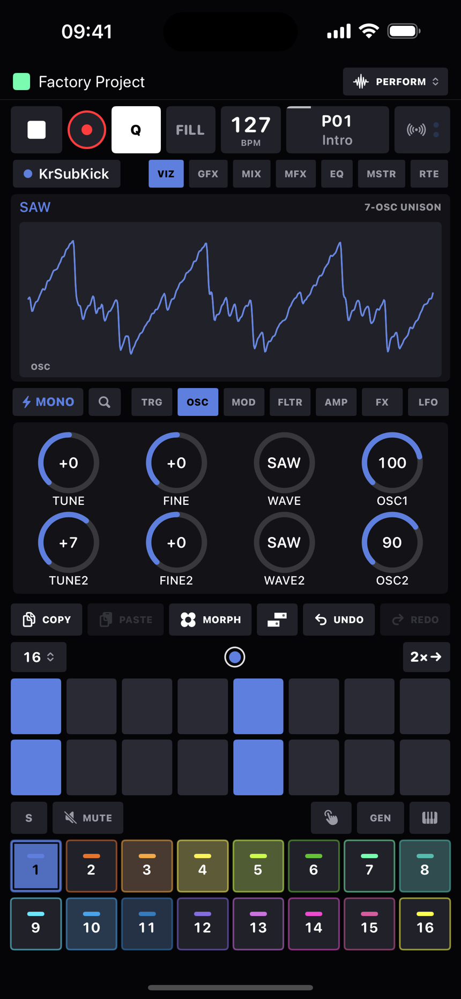
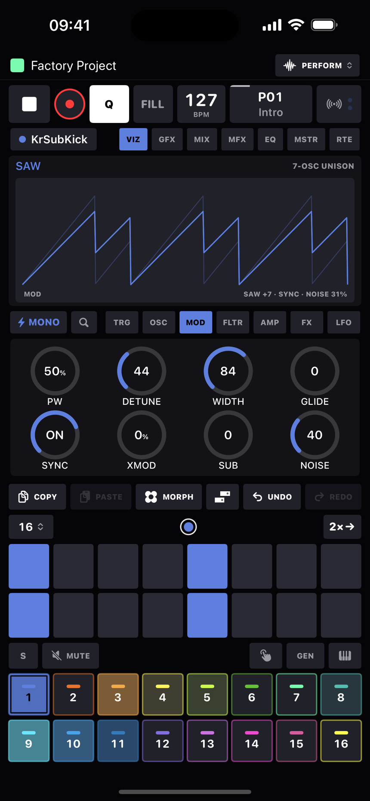
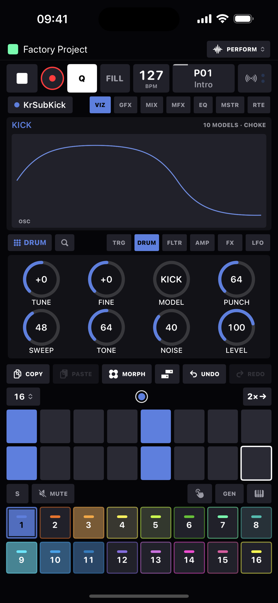
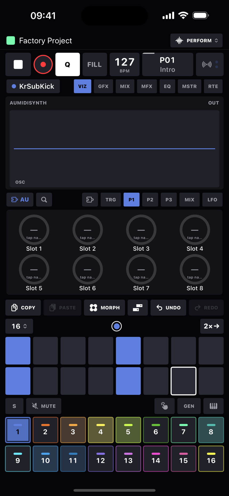
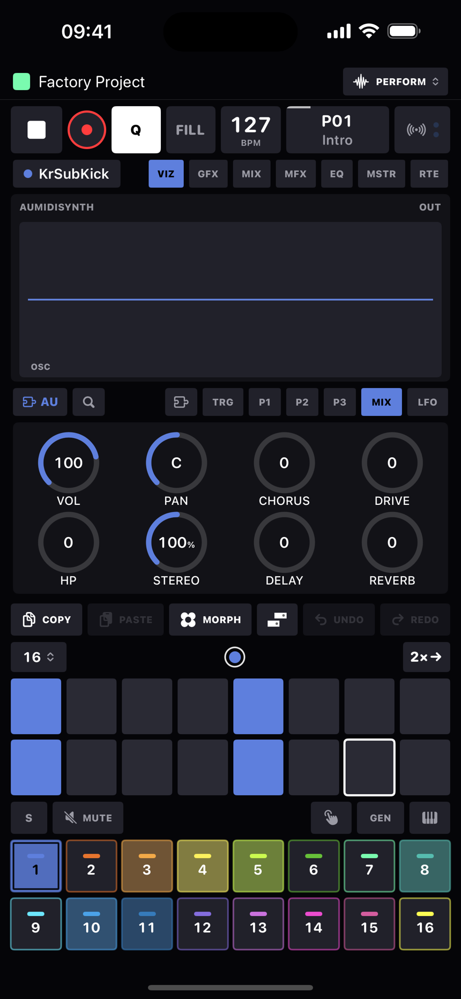
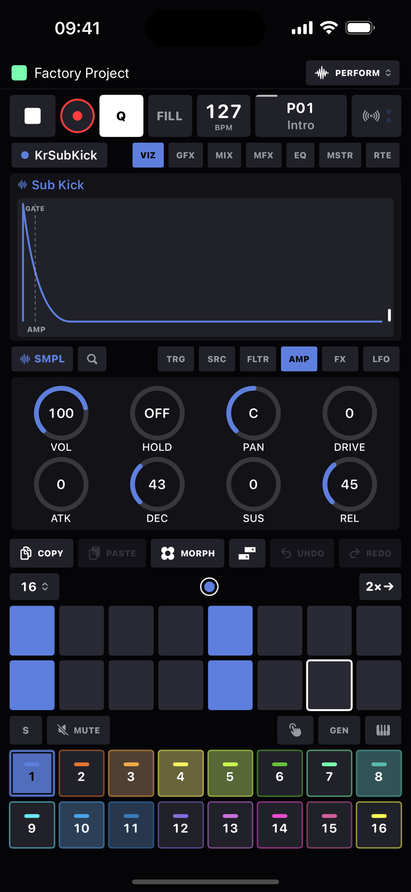

Devices
Every track runs one device, which is a sound engine with its own set of knob pages. You swap devices from the chip above the knobs. The sequence stays put; only the sound changes.
The devices
| Device | Voices | What it is |
|---|---|---|
| SAMPLER | 1–8 | Plays samples from the project's pool, six different ways: one-shot, repitch, warp, stretch, slice and grid. Voices (in the track sheet) decides whether a new hit cuts the last one off or lets it ring. |
| MONO | mono | Seven detuned oscillators and a sub sine. A big unison monosynth with glide. |
| POLY | 8 | Three oscillators a voice, eight voices. The mono synth's polyphonic sibling. |
| FM | 8 | Four sine operators, eight algorithms and feedback. Classic four-op FM. |
| WT | 8 | Wavetable scanning with up to seven-voice unison, reading standard 2048-sample-frame tables from a pool of 128. |
| ACID | mono | One oscillator into a zero-delay-feedback ladder filter. Slides and accents included. |
| DRUM | mono | Eight drum models built from scratch: 808-style kick and snare, clap, hats, tom, rim and cowbell, with punch, sweep, tone and noise macros. Each new hit chokes the last. |
| PLUCK | 8 | A Karplus-Strong string: a burst into a delay line with damping, pick position and a detuned stereo double. |
| MIDI | - | No sound of its own. Notes and knob moves go out the MIDI wire to hardware or other apps, and the synth's audio can come back in through the same track. |
| AU | plugin's | Hosts any Audio Unit instrument (AUv3) installed on the device. The plugin's audio comes back through the track's own mixer stage, and 24 knob slots turn its parameters. See AU Synth. |
Param pages
Every device's parameter area is a row of pages: TRG (the step editor) first, then the device's own sound pages, then LFO.
| Device | Pages |
|---|---|
| Sampler | TRG · SRC · FLTR · AMP · FX · LFO |
| Mono | TRG · OSC · MOD · FLTR · AMP · FX · LFO |
| Poly / Wavetable / Acid | TRG · OSC · FLTR · AMP · FX · LFO |
| Drum | TRG · DRUM · FLTR · AMP · FX · LFO |
| Pluck | TRG · STR · FLTR · AMP · FX · LFO |
| FM | TRG · FM · MOD · FLTR · AMP · FX · LFO |
| MIDI | TRG · SRC · 1 · 2 · 3 · LFO, with a MIX page before LFO once the audio return has an input |
| AU | TRG · P1 · P2 · P3 · MIX · LFO |
Each sound page is a fixed grid of two rows of four knobs. If a device doesn't use a cell, that cell stays empty rather than everything shuffling along, so your hands (and any controller you've mapped) find the same knob in the same place on every device. The small caption on a knob face, a CC number or a sub-label, sits under its value. When a step is latched the header reads LOCKS, the knobs edit that step's locks instead of the track, and the display above shows the step's values too.
TUNE moves in whole semitones on every device and reads that way (+7, −12). FINE covers the cents in between. The pitch wheel bends around whatever TUNE says without moving it.
The sampler's six modes
The sampler reads its SRC page differently depending on the mode, which you pick from the dropdown chip in the waveform header. The mode is a parameter underneath, so a step can lock it. Whatever the mode, the bit of the sample you're playing is set by START and LENGTH.
| Mode | What it does |
|---|---|
| ONE SHOT | Plays the START/LENGTH window the ordinary way. MODE picks direction and looping (FWD, REV, FWD∞, REV∞) and LOOP places the loop point inside the window. |
| REPITCH | Fits the window into BARS by changing playback speed, so pitch follows tempo like a record. LOOP becomes a plain on/off. |
| WARP | Beat-slicing time-stretch. The window is cut into musical segments (SEG, from 1/4 to 1/64 notes) whose starts always land on the tempo grid across BARS, so the pitch stays where TUNE puts it. The joins are crossfaded. The first BARS setting is AUTO, which guesses the loop's length from how long the sample is at the current tempo. |
| STRETCH | Smooth time-stretch: the playhead crosses the window in BARS while pitch stays put. Granular and smooth, so it suits pads, vocals and melodic loops. |
| SLICE | Plays the slice markers you placed in the slice editor. The SLICE knob picks a slice, and incoming notes step through the slices (wrapping round) instead of changing pitch. Anything before your first marker counts as slice 1. |
| GRID | An even chop: GRID cuts the window into 2, 4, 8, 16, 32 or 64 equal slices, and SLICE and notes pick them exactly as in SLICE mode. |
SRC page by mode
| Cell | ONE SHOT | REPITCH | WARP | STRETCH | SLICE | GRID |
|---|---|---|---|---|---|---|
| 1 | TUNE | - | TUNE | TUNE | TUNE | TUNE |
| 2 | FINE | - | FINE | FINE | FINE | FINE |
| 3 | MODE | BARS | BARS (AUTO) | BARS | - | - |
| 4 | SAMPLE | SAMPLE | SAMPLE | SAMPLE | SAMPLE | SAMPLE |
| 5 | START | START | SEG | START | - | - |
| 6 | LENGTH | LENGTH | - | LENGTH | - | GRID |
| 7 | LOOP | LOOP on/off | - | - | SLICE | SLICE |
| 8 | LEVEL | LEVEL | LEVEL | LEVEL | LEVEL | LEVEL |
- TUNE is ±24 semitones and FINE is ±50 cents.
- BARS is 1/4, 1/2, 1, 2, 4, 8 or 16 bars: how long the sample is, musically, for the modes that fit it to tempo.
- SAMPLE is the pool slot, counting from 1. It's read at the moment the trig fires, so p-locking it per step works cleanly.
Mono synth: OSC & MOD pages
The mono synth's source section is really a little mixer. The unison stack, a second oscillator, the sub and a noise source each have their own level going into the filter, so any one of them can play on its own. Noise alone makes a hat; sub alone makes a clean bass.
OSC page: TUNE · FINE · WAVE · OSC1 over TUNE2 · FINE2 · WAVE2 · OSC2.
| Knob | Does |
|---|---|
| TUNE / FINE | Whole semitones ±24 and ±50 cents. |
| WAVE | SAW, SQR, PLS or TRI for the unison stack, all anti-aliased. |
| OSC1 | The stack's level into the mix. |
| TUNE2 / FINE2 | The second oscillator's offset: stepped semitones ±24 (64 is unison) and ±50 cents. |
| WAVE2 | SAW, SQR, PLS, TRI or SIN for oscillator two. |
| OSC2 | Oscillator two's level. 0 is off, which gives you the classic single-oscillator sound. |
MOD page: PW · DETUNE · WIDTH · GLIDE over SYNC · XMOD · SUB · NOISE.
| Knob | Does |
|---|---|
| PW | Pulse width of SQR and PLS on both oscillators: 0 is 50%, 127 is a 5% needle. |
| DETUNE | Unison spread, up to ±60 cents across the stack. |
| WIDTH | Where the stack sits in the stereo field. |
| GLIDE | Portamento, constant time, up to about 1.2 seconds. |
| SYNC | Past halfway, oscillator two hard-syncs to the stack's centre oscillator. |
| XMOD | Oscillator two phase-modulates the stack. Cross-mod depth. |
| SUB | Level of a sine an octave down. |
| NOISE | White noise into the mix, before the filter. |


The Poly synth keeps to a single OSC page, TUNE · FINE · WAVE · SUB · DETUNE · WIDTH · GLIDE · LEVEL, built on the same stack.
FM synth: FM & MOD pages
FM page: TUNE · FINE · ALGO · RATIO C / RATIO A · RATIO B · FDBK · LEVEL. MOD page: FM · M.ATK · M.DEC · M.LVL / DET.
- ALGO picks one of eight operator layouts:
2PAIR(two two-op pairs),PR+2(a pair plus two sines),FAN+1(two modulators into one carrier, plus a sine),CHN+1(a three-op chain plus a sine),STACK(the full four-op chain),FAN3(three modulators into one),1→3(one modulator, three carriers) andADD4(pure additive). - RATIO A, B and C set the operators' frequency ratios from ×0.25 to ×16. RATIO B drives two operators.
- FM is the modulation index: how hard the modulators push the carriers.
- M.ATK, M.DEC and M.LVL are the modulator envelope. It ignores note-off (the amp envelope does the gating), and with M.LVL at maximum the FM amount just holds still.
- FDBK lets the top operator modulate itself, for noise and edge.
- DET spreads two operators up to ±14 cents apart for thickness.
Wavetable synth: OSC page
- SCAN decides how POS moves through the table: SMOOTH crossfades between neighbouring frames, STEP switches between them.
- TABLE picks the wavetable from the project's pool of 128.
- POS is the position in the table. It's the performance knob, and it loves an LFO.
- UNISON stacks 1 to 7 readers, and SPREAD detunes them (±40 cents) and pans them out in one move.
Tables follow the usual convention of 2048-sample frames, up to 256 per file. Anything that isn't a clean multiple of 2048 loads as a single-cycle wave. Eight factory tables come in the pool: Basic Morph, PWM, Harmonics, Sync, FM, Vowel, Bell and Digital. You can bring in your own from anywhere in Files through the wavetable browser.
Acid: the squelch box
One oscillator, SAW or SQR, straight into a four-pole ladder filter modelled with zero-delay feedback. There's no TYPE knob here because the ladder is the filter. The low end thins out as you push the resonance, just like the original, and that's where the squelch comes from.
- Slides. It's mono and legato is how you speak to it: a note that starts while the previous gate is still open slides, so the pitch glides across without the envelope restarting. In the sequencer that just means overlapping the gates. GLIDE is the slide time, about 65 ms by default.
- Accents. A trig with velocity 110 or more is accented: louder (accent is this voice's only dynamic, true to form) plus a resonant kick to the cutoff. ACCENT sets how much. The default trig velocity is 100, so plain steps stay plain and you push a step's velocity up to accent it.
- Drive after the filter. On this device alone the drive comes after the ladder, so the resonant peak hits the clipper hardest as it sweeps. That's the scream.
Drum: the synthesized kit
Eight one-shot models on the MODEL knob: KICK, SNARE, CLAP, CHAT (closed hat), OHAT (open hat), TOM, RIM and BELL, which is the cowbell. There are no samples in here; each one is synthesised, with structures borrowed from the well-studied 808 circuits. The kick's attack is an FM glide and a click into a saturator, with a second stage for chest. The snare is a two-mode shell over two bands of noise, one for the shell and one for the wires. The clap is three sawtooth pre-echoes into a reverb-tail envelope. The hats are a cluster of six squares at Plaits' measured ratios through a band-pass and the asymmetric swing VCA, and the cowbell is the 540 and 800 Hz pulse pair. DEC is each model's length knob and scales its body, pitch and noise envelopes together, so a kick can boom and an open hat can ring. Velocity shapes the hit as well as the level: a soft hit has less punch, less sweep, less noise and a duller tone. Every knob can be p-locked.

- PUNCH is the transient: attack saturation on the kick and tom, snap on the snare, tighter pre-echoes on the clap.
- SWEEP is pitch-envelope depth: the kick's drop, the tom's bend, the lift in the snare's shell. P-lock it per step for tuned kick lines.
- TONE is the model's colour: body saturation on the kick, the noise band's centre on the snare and clap, the hats' high-pass, the bell's band.
- NOISE is the noise mix: air on the kick, wires on the snare, sizzle on the hats, tail length on the clap.
- Pitch follows the keys. Notes tune each hit, TUNE and FINE offset it, and DEC on the AMP page is the length of the hit.
- Choke is per track. Put closed and open hats on two tracks and they choke independently, like separate voices on the old boxes.
Pluck: the string
A Karplus-Strong string. Each note fires a one-period burst into a delay line with a damping filter in the loop, and the line rings like a plucked string. Eight voices, so chords are fine.
- EXCITE is the burst's colour: NOISE (the classic), BRITE (wiry), SOFT (nylon or felt) and PICK (a saw stroke with a bit of skin noise).
- RING is the loop's feedback, which is how long the string sustains.
- DAMP darkens inside the loop. High settings mute it like a palm on the strings.
- POS is the pick position, a comb notch on the burst from bridge twang to round fingerboard.
- SPREAD adds a second, slightly detuned string on the right as a stereo double.
AU Synth: hosted plugins
The AU device plays an Audio Unit instrument from another app, which means anything on the phone that registers as an AUv3 instrument. Set a track's device to AU and pick the plugin in the track sheet's AU Plugin card, where they're listed by manufacturer. The card reads Loading, then Ready along with the plugin's latency and how much of the render it's using. If the phone no longer has a plugin the card says so and the track stays quiet until it's back.
- It plays like any other device. Trigs, the live keyboard, p-locks, retrigs, conditions, sends from other tracks and the piano roll all drive it. Notes land sample-accurately, and if the plugin reports latency it's pulled forward by that much so it sits on the grid with everything else.
- P1, P2 and P3 are 24 parameter slots. Tap a knob's name to pick the plugin parameter it turns from a searchable list (or clear it), and to put an LFO on the slot. The knob then shows the plugin's own units on its face, Hz or dB or a waveform name, and turning it turns the plugin. Slots take p-locks, LFOs, recorded automation, morphs and MIDI learn like any knob, and if you move a parameter inside the plugin's own window the slot follows.
- The MIX page is VOL · PAN · CHORUS · DRIVE over HP · STEREO · DELAY · REVERB: the track's own stage around the plugin's output, with the same drive, highpass, stereo width and chorus the internal voices have, then the sends. So an AU track sits in the mix, the sends and the master chain exactly like a sampler track, and the Audio Out card can route it to a hardware pair or a mono channel.
- The plugin's own window opens from the puzzle-piece button next to TRG on the knob page, or from the AU Plugin card. Its factory presets are in a menu on the card.
- The plugin's full state saves with the project, in the project folder's Files/AU/, whenever you close its window, whenever the project autosaves, and when HeartBeat goes to the background. A sound preset saved from an AU track carries the plugin and its state with it, so the preset brings back the exact patch in any project on a device that has the plugin.
- Plugins run in their own process, so if one crashes it drops out on its own and HeartBeat keeps playing. The FLTR, AMP and FX pages below don't apply to an AU track; the plugin owns its voice.


MIDI device: the audio return
A MIDI track can bring its hardware synth's audio back in through the same track, so the synth you're sequencing also sits in your mix. In the track sheet's Audio In card, pick the interface input the synth is plugged into: one channel as mono (it plays on both sides) or a pair as stereo. Every track you switch to the MIDI device starts with this set to Off, and HeartBeat will never pick an input for you, because the built-in microphone through the speaker is a feedback loop waiting to happen. While any MIDI track in the pattern has a return, the interface's inputs stay open.
- Once a return is chosen a MIX page appears before LFO: GAIN · PAN · CHORUS · DRIVE over HP · STEREO · DELAY · REVERB. GAIN starts at unity and the rest is the same stage the AU and internal devices get, so the synth sits in the mix, the sends and the master chain like any other track, and the Audio Out card routes it to a hardware pair or mono channel. These knobs are track values, per pattern, and they take MIDI learn. They don't take p-locks, since a lock on a MIDI track goes out the wire as a CC.
- The display shows the return after its stage on every page but LFO. Latency is one audio buffer plus whatever your interface adds.
FLTR page: every device
TYPE · FREQ · RESO · ENV over F.ATK · F.DEC · F.SUS · F.REL.
| TYPE | Filter |
|---|---|
| OFF | Bypass. |
| LP2 | 12 dB/oct lowpass. |
| LP4 | 24 dB/oct lowpass (two stages in a row). |
| BP | Bandpass. |
| HP | Highpass. |
| NOT | Notch. |
FREQ sweeps from 20 Hz to 18 kHz. ENV is a bipolar envelope-to-cutoff amount with its own ADSR underneath. The filter display draws the real frequency response, and a dashed amber curve shows where the envelope will take it at full depth.

AMP page: envelopes, one-shot and gated
VOL · HOLD · PAN · DRIVE over ATK · DEC · SUS · REL. Envelope times go up to 4 seconds, with most of the knob's travel spent where drums live.
- HOLD pins the envelope at full level for a set time between attack and decay (OFF at zero). Think gated stabs, kicks that sustain, a sample held open before the chop. P-lock it per step for length-per-hit moves.
- REL at maximum reads ∞ and that's one-shot mode. Note-off is ignored and DEC becomes the tail, drum-machine style. Samples start out this way. Pull REL below ∞ and you have a normal gated ADSR where SUS and your gate lengths matter.
- DEC at maximum also reads ∞. On the sampler that holds the envelope open so the whole sample plays through. Synths have no sample end to stop them, so there ∞ becomes a long 20-second tail, and in one-shot mode they always decay to silence. Nothing can drone forever by accident.
- VEL SEN lives on the TRG page's track defaults these days: how much velocity drives the level, as a percentage. New tracks start at 100%, and 0% flattens all dynamics.
FX page: the per-voice chain
BIT · SRR · CHORUS · RING over HP · STEREO · DELAY · REVERB. The order through the voice is HP, then BIT and SRR, then DRIVE, RING, the filter, STEREO, the amp and pan, then the sends, with CHORUS as a stereo insert on the track's sum.
| Knob | Does |
|---|---|
| BIT | Bit crusher, 16 bits down to 2. It tracks the envelope the way the old samplers did, so the resolution falls away as a note decays into a sputtery tail. |
| SRR | Sample-rate reduction, from ÷1 to ÷100, sample and hold. |
| DRIVE | The waveshaper (on the AMP page): asymmetric tanh with up to about 61× gain and automatic makeup. Even harmonics, amp-like. |
| RING | Ring modulator. One knob sweeps both the mix and the carrier, 40 Hz to 4 kHz. |
| CHORUS | Stereo quadrature chorus on the track's sum. |
| HP | A dedicated highpass ahead of everything, 20 Hz to 4 kHz. |
| STEREO | Mid/side width. 100% is as recorded; past that, mono sources get synthesised width. |
| DELAY / REVERB | Sends to the shared tempo-synced delay and plate reverb. See FX & mixer. |